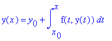
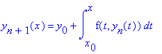

Difference Equations
and
Recursive Relations
1901-1925
It is from these recursive equations that some mathematical
wonders are created. We begin with plane filling curves or fractals, which
are curves that fill planes without any holes. The first such curve
was discovered by Guiseppe Peano
in 1890. Other mathematicians who used difference equations in their work
with plane filling curves include David Hilbert
(1862-1943), and Niels Fabian Von
Koch (1870-1924). The relevant work all three will be discussed
in the following. As will the work of Emile Picard
(1856-1941) and Martin Kutta(1867-1944),
both of whom used recursive equations in solutions to differential equations.
There are curves that fill a plane without holes. The first such curve
was discovered by Guiseppe Peano
in 1890 and the second
by D.Hilbert
(1862-1943). Calling them Peano Monster Curves, B. Mandelbrot collected
a series of quotations in support of this terminology.
Fractal Curves and Dimension
Fractals burst into the open in early 1970s. Their
breathtaking beauty captivated many a layman and a professional alike.
Striking fractal images can often be
obtained with very elementary means. However, the
definition of fractals is far from being trivial and depends on a formal
definition of dimension.
It takes a few chapters of an Advanced Analysis
book to rigorously define a notion of dimension. The important thing is
that the notion is not unique and even more
importantly, for a given set, various definitions
may lead to different numerical results. When the results differ the set
is called fractal. Or in the words of B.
Mandelbrot,
the father of fractals:
`` A fractal is by definition a set for which the
Hausdorff-Besicovitch
dimension strictly exceeds the
topological
dimension."
Visit
Mandelbrot set
The topological dimension of a smooth curve is, as
one would expect, one and that of a sphere is two which may seem very intuitive.
However, the formal
definition
was only given in 1913 by the Dutch mathematician
L.
Brouwer (1881-1966)).
A (solid) cube has the topological dimension of
three because in any decomposition of the cube into smaller bricks there
always are points that belong to at least four
(3+1) bricks.
The Brouwer dimension is obviously an integer. The
Hausdorff-Besicovitch dimension, on the other hand, may be a non integer.
Formal definition of this quantity
requires a good deal of the
Measure
Theory. But fortunately for a class of sets Hausdorff-Besicovitch dimension
can be easily evaluated. These sets are known as
the self-similar fractals and, because of that ease,
the property of self-similarity is often considered to be germane to fractals
in general. The applet below illustrates
the idea of self-similarity.
Initially there is an equilateral triangle in the
middle of a straight line segment. This combination of four segments form
a pattern which serves as a description of an
algorithm to be used later on. The secret meaning
of the pattern is this:
Start with a straight line segment. Proceed in stages.
On every stage traverse the curve obtained previously. Every time you encounter
a straight line segment, replace it with the four-segment pattern as was
first done with the original line segment. As with the
Hilbert
curve, which is similar in construction, it's possible to formally
prove that thus obtained curves converge to a limit curve. This limiting
curve is
self-similar
because it consists of four smaller copies of itself which, in turn, also
and naturally consist of four smaller copies of themselves and so on.
To see how the algorithm works try the following
applet
(click on hilber.scr top of the page) or try this
movie.
To understand the notion of the similarity dimension,
first observe that, if the initial line segment was 1 unit in length, then
the second stage curve that consists of four
segments each one third of the initial line, is
4/3 units in length. On the third stage the length becomes (4/3)2 and on
the fourth it's (4/3)3 and so on. Since 4/3>1 the
farther you go the longer the curve results. Finally,
the limiting curve will have infinite length. Which is somewhat surprising
because of it's being generated by such a simple procedure in a very limited
space from the curves of finite length.
The similarity dimension of the snowflake curve
is finite. This is arrived at in the following manner. If it were a straight
line we could split it into to smaller segments
each half the length of the "parent" line. The length
of the line would be the sum of the two smaller segments. If we were talking
about areas, then taking a square and
splitting it into 4 smaller squares with areas 1/4
of the "parent" square. We would observe that the four smaller areas sum
up to the original size. Notice that when the
side of a square is halved, its area decreases by
the factor of 4 which is (1/2)2. For a cube, acting similarly, decreasing
its size by a factor of 2, results in smaller cubes each with the volume
1/8=(1/2)3 of the "parent" cube. We can detect a commonality in these three
examples. Given a shape of size S. It's split into N similar smaller shapes
each with the size (S/N) so that N*(S/N)=S. In each of the three cases
we used a different function S. If a is a linear dimension of the shape
we have S(a)=a for a line segment and S(a)=a2 and S(a)=a3 for the square
and cube, respectively. Thus, N*(S/N)=S can be rewritten as N*(a/M)D=aD
where a is the
"linear size" of the shape, M is the number of linear
parts, and N is the total number of the resulting smaller shapes. This
gives N*M-D=1 or N=MD. In all three cases we took M=2 and D was successively
1, 2, and 3. We see that D=log(N)/log(M) is what we would call the dimension
in all three cases.
This quantity D is known as the similarity dimension.
It applies to shapes that are composed of a few copies of themselves whose
"linear" size is smaller than that of
the "parent" shape by a factor of M. Returning to
the snowflake, we have N=4 and M=3. In this case D=log(4)/log(3) is somewhere
between 1 and 2.
The Koch's snowflake has no self-intersection and
is obtained from a line segment as an image of a continuous function. By
one of Brouwer's theorems this function
preserves the topological dimension of the segment
(which is, of course 1). Finally, the curve has topological dimension 1
whereas its Hausdorff-Besicovitch dimension is log(4)/log(3).
Note that for the Hilbert curve that (disregarding
small links) consists of 4(=N) copies of itself each twice (M=2) as short
as the whole, we get D=log(4)/log(2)=2.
Which is not surprising as the curve covers the
whole of the square whose dimension is 2. From the above mentioned Brouwer's
theorem it follows that the
limiting curve must have self-intersections. For
otherwise it would be a topological (in particular, dimension preserving)
transformation. But a line is of (topological)
dimension 1 whereas a square has dimension 2.
Fractals and plane filling curves are two of many
applications of difference equations. Another important application is
for the numerical solution of differential equations. Two of the most important
are called the
Runge-Kutta
method, based on the work of Martin Kutta(1867-1944), and the method
of
successive approximations, based on the work of Emile Picard
(1856-1941). We begin by discussing the Runge Kutta Method, which is quite
simple to use. This method for solving initial value problems of the form
numerically.
Runge-Kutta Methods
The Runge-Kutta formula involves a weighted average of values of
f (t,y) at different points in the interval [tn ,tn+1].
It is given by
yn+1 = yn + h/6(kn1+2kn2+2kn3+kn4)
where,
kn1= f ( tn ,yn
)
kn2= f ( tn +h/2,
yn +h kn1/2)
kn3= f ( tn +h/2,
yn +h kn2/2)
kn4= f ( tn +h, yn
+h kn3)
Successive application of this formula yields increasingly
more accurate results. This method is of two orders more accurate
(the results oscillate less) than the Improved Euler Formula and
the three term TaylorMethod.
Picard Iteration
We can write an ordinary differential
equation as a fixed point formula. If we have a starting guess, we
can iterate the equation to find an approximate solution to the original
equation. For example, suppose we have the first order ordinary differential
equation
y’(x) = f(x,y)
with initial condition y(x0 )= y0 . This equation
can be written as an integral equation in the form

Note that the above already incorporates the initial conditions. If we
had a guess of y(x), say y1(x), then we might be able
to improve our guess by forming y2(x) as follows

Then, knowing y2(x) we could form y3(x)
by the same technique. We can continue this process indefinitely, each
time using the formula

What we take for y1(x) is arbitrary; it is often easiest to
take y1(x) = y0 .
Additional information and interesting web sites:
http://www-uk.hpl.hp.com/brims/art/gallery/hilbert/background.html#applications
http://dir.yahoo.com/Arts/Visual_Arts/Computer_Generated/Fractals/